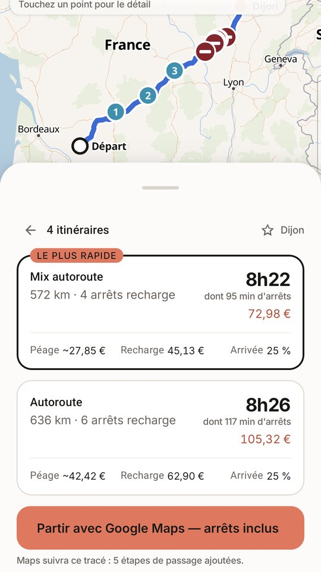
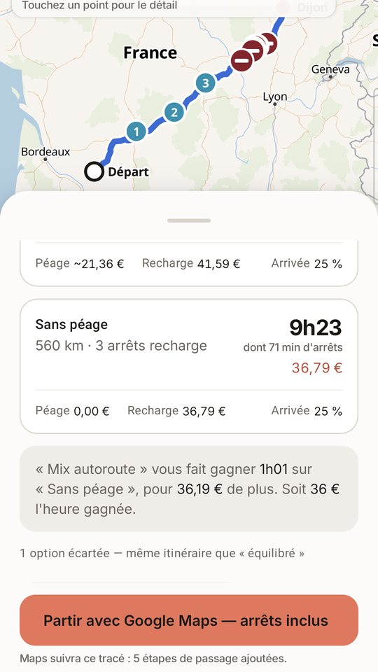
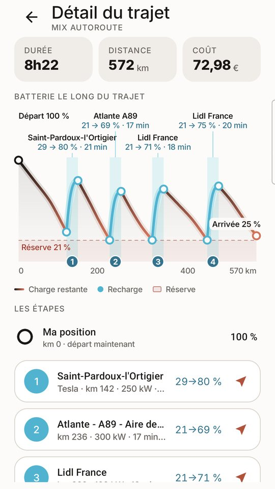

Un planificateur d'itinéraire pour voiture électrique en France,
gratuit, qui affiche ce qu'un trajet coûte vraiment — recharge
et péages — et qui sait le calculer sans réseau.
Wattlas est disponible sur Google Play. Gratuit, sans
compte, sans publicité, sans achat intégré. Android, France.
L'appli est née des retours d'une poignée de conducteurs qui l'ont
éprouvée sur de vraies routes, et elle continue d'avancer comme ça :
si le calcul se trompe sur votre voiture ou si quelque chose coince,
écrivez à contact@wattlas.fr.
Une note sur le Play Store aide aussi — c'est ce qui décide les
suivants à l'essayer.

Plusieurs itinéraires pour la même destination, chacun avec son temps, son péage et sa recharge.

Le prix de l'heure gagnée entre le plus rapide et le plus économique. Le choix reste le vôtre.

La batterie le long du trajet, chaque arrêt avec sa durée, son coût et l'énergie ajoutée.
Ce qu'il fait
Il annonce ce que ça coûte vraiment : recharge au tarif du réseau emprunté, péages au centime — les 551 gares françaises sont dans l'appli — et batterie restante à l'arrivée.
Il compare le prix du péage au temps gagné. Avec le pack hors ligne, plusieurs itinéraires du tout-autoroute au tout-national, avec leur coût réel — et la réponse à la seule question qui compte : le plus rapide pour le budget qu'on se fixe. En ligne, un itinéraire calculé et détaillé.
Il calcule sans réseau. Avec le pack France (optionnel, ~3,3 Go, à télécharger en Wi-Fi depuis les réglages), carte, routage, bornes de recharge et grilles de péage vivent sur le téléphone : le trajet aboutit même sans une barre de signal. Sans le pack, l'appli fonctionne avec une connexion internet.
Il compte le temps d'arrêt en entier : la durée annoncée comprend les recharges et les minutes perdues à se garer, brancher et repartir — les cinq minutes que les estimations optimistes oublient.
Une borne en panne en arrivant ? Un appui l'écarte et recalcule le trajet sans elle.
Il apprend votre voiture — avec vous. Après un trajet, vous notez la batterie réellement restante ; l'appli s'en sert pour que la consommation utilisée devienne la vôtre, pas celle du constructeur.
Et ce qu'il ne fait pas — encore : la disponibilité des bornes n'est
pas remontée en direct, et les tarifs de recharge sont estimés par
réseau, pas relevés borne par borne.
Vie privée
Pas de compte, pas de publicité, pas de mouchard. Vos réglages et vos
destinations restent sur votre téléphone ; en calcul en ligne, le trajet
transite par le serveur de routage, sans être conservé. Avec le pack
hors ligne, rien ne sort du téléphone.
Lire la politique de confidentialité.
Sources des données publiques
Wattlas s'appuie sur des données publiques ouvertes, publiées par l'État :